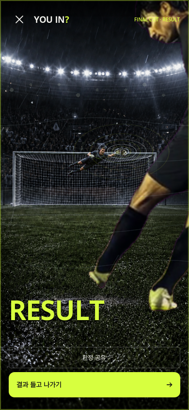
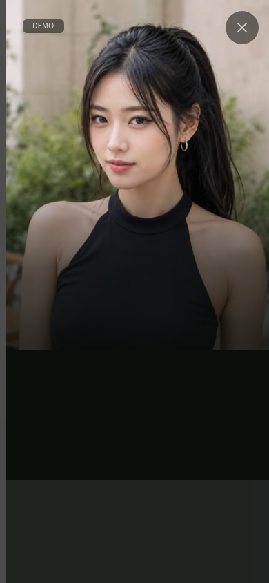
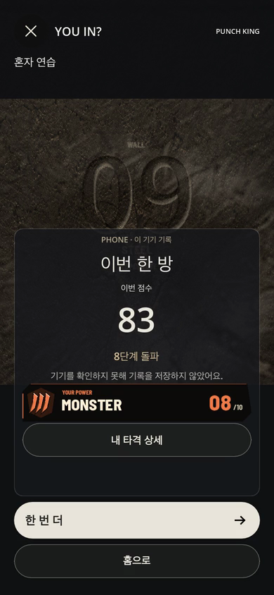
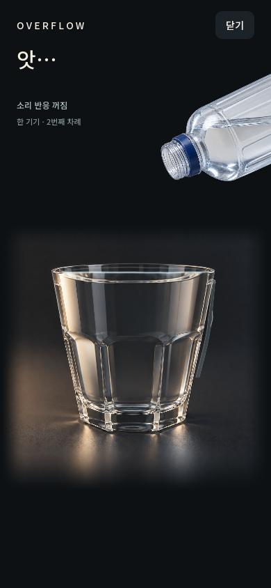

모임은 하나.
게임은 다섯.
친구의 표정부터 마지막 한 발까지.
오늘의 게임을 골라보세요.
라스트 킥
마지막 한 발까지
아무도 모른다.
친구와 바로 연결하고, 짧게 겨루고, 결과 한 장으로 오래 놀리는 승부.
누가 더?
오늘의 나는,
누구의 취향일까?
매 판 달라지는 가상의 NPC 취향. 진지할 이유가 없어서 더 재밌는 선택.
가상의 취향이며 객관적인 외모 평가가 아닙니다.
펀치 킹
한 번의 도전.
웃음 한 방.
친구들이 지켜보는 가운데 가볍게 도전하고, 가장 요란하게 웃는 짧은 승부.
간당간당
한 방울만 더.
넘치면 네가 진다.
같은 컵에 돌아가며 물을 붓는 2~6인 눈치 게임. 멈출 타이밍을 놓친 한 사람이 마지막 물방울의 주인이 됩니다.
딱 걸렸어
질문은 직접.
표정은 카메라가.
질문 하나에 흔들리는 표정. 친구의 반응이 그대로 게임이 되는 순간.
오락용 게임이며 과학적 거짓말 탐지기가 아닙니다.
웃음은 친구들과.
카메라 데이터는 기기 안에.
얼굴 반응 효과와 게임 진행에 쓰이는 영상·사진은 기기 안에서 처리합니다. 원본을 서버로 업로드하거나 영구 저장하지 않습니다.
임시 얼굴 분석 데이터는 라운드가 끝나거나 게임을 종료하면 폐기하도록 설계했습니다.
개인정보처리방침다음 게임은
아직 비어 있어요.
친구들과 어떤 순간을 게임으로 만들고 싶은지 들려주세요.
좋은 아이디어는 다음 YouIN의 시작이 됩니다.
Google Form으로 제안이 전달됩니다. 개인정보는 적지 마세요.